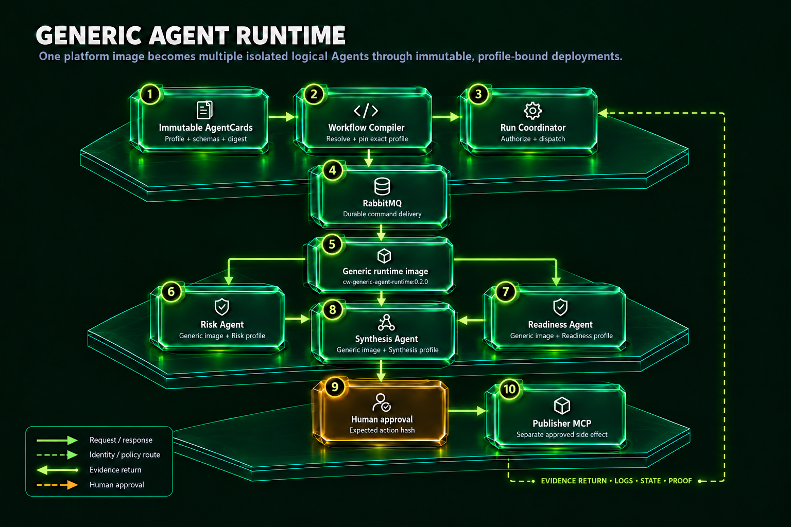
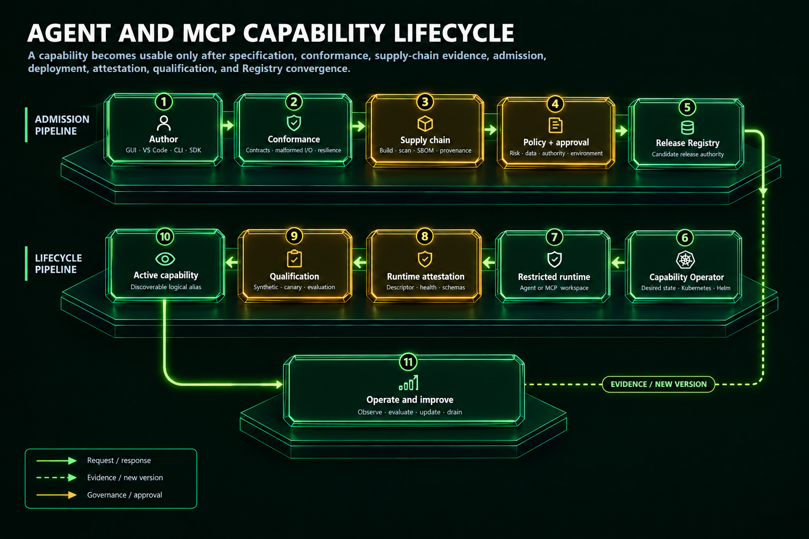
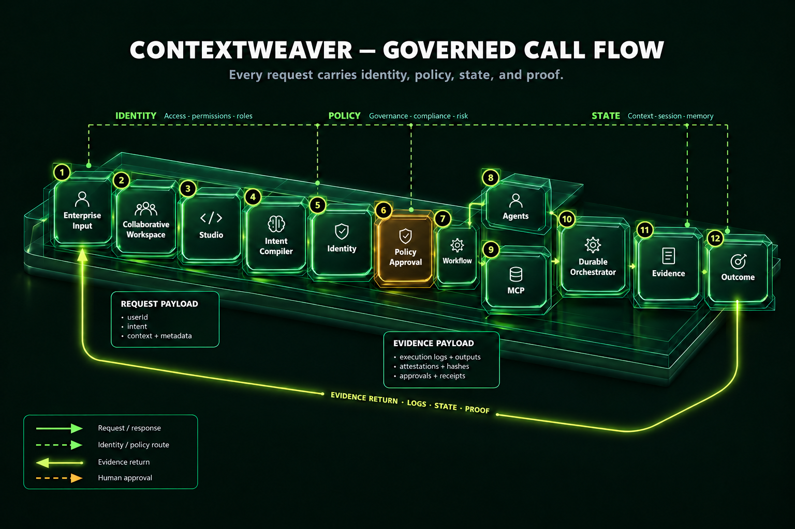
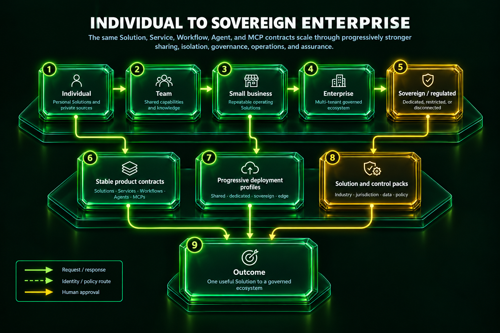
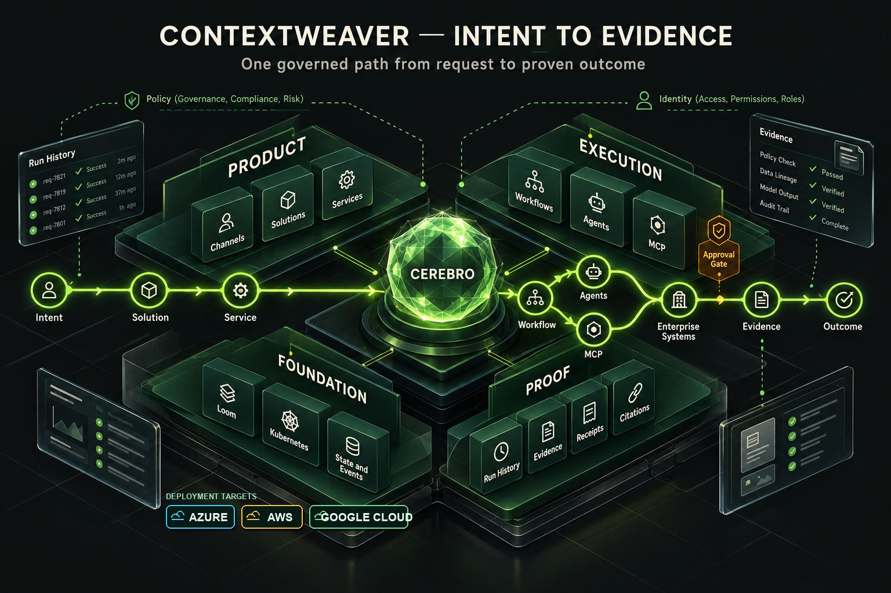
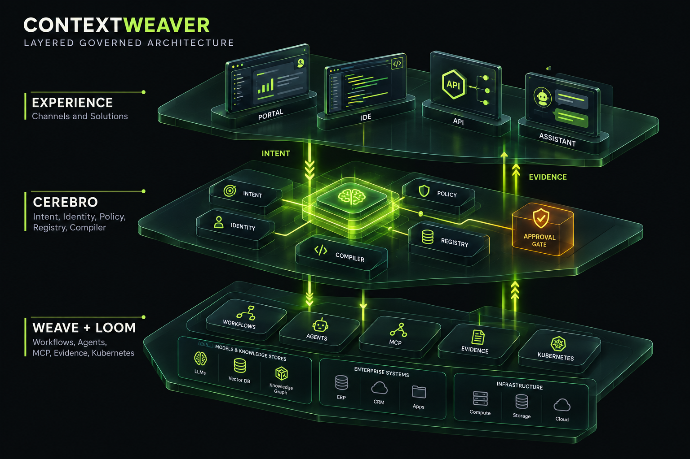
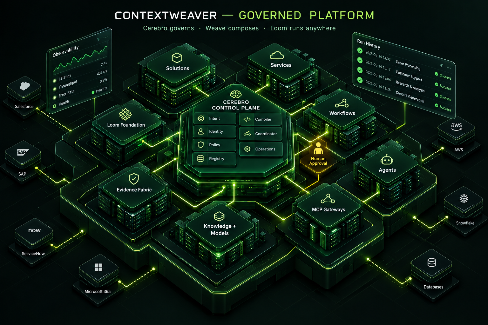
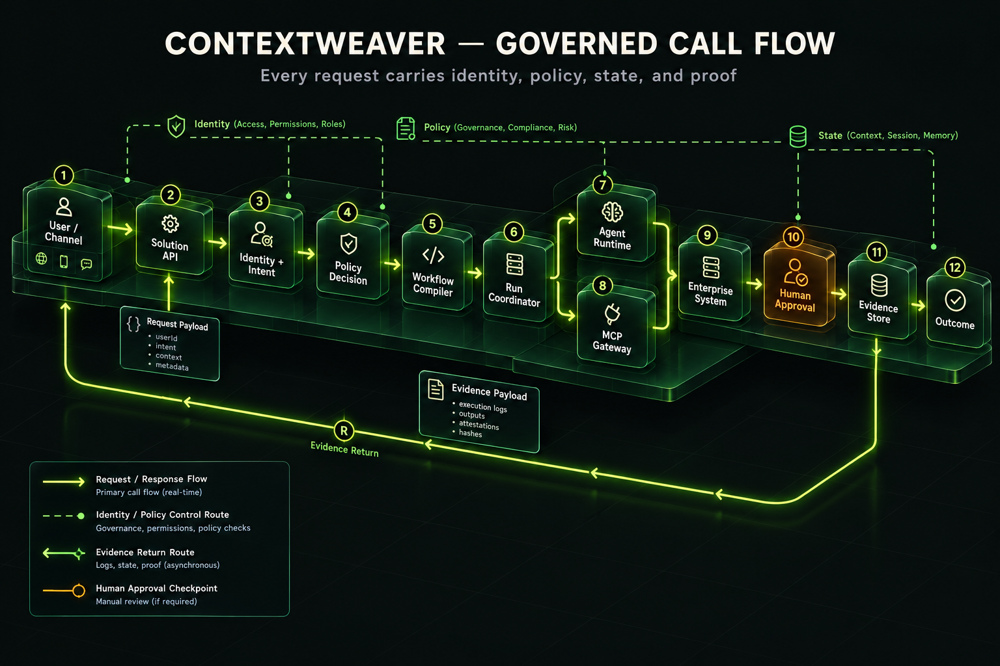
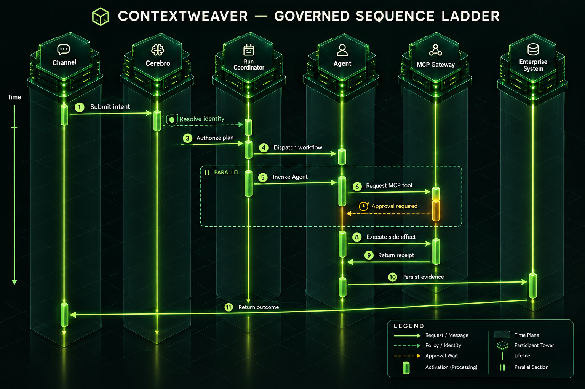
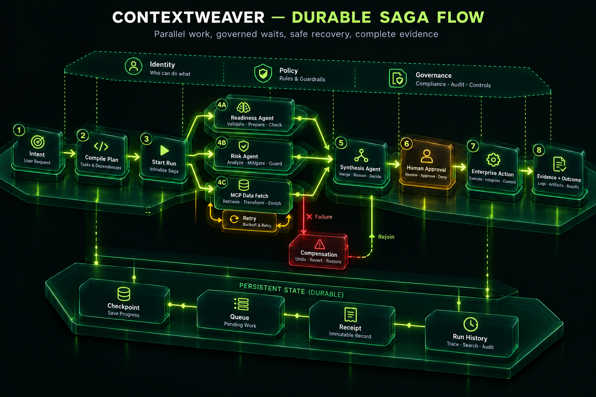

Complete local visual audit
One angled glass architecture system.
Every production master is shown below. Interactive diagrams retain their original nodes, routes, captions, controls, accessibility, and animation timing while sharing the approved Platform Planes camera and material language.










